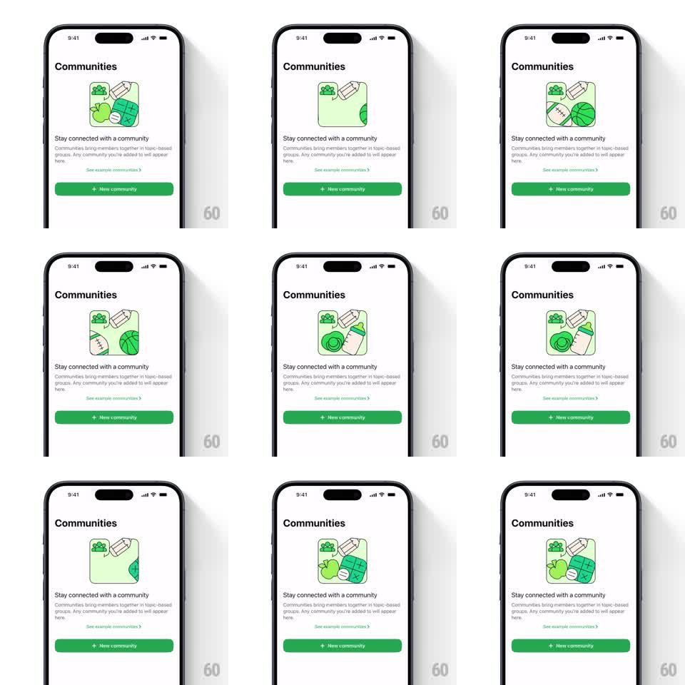

Media
Frame-by-frame

Rebuild this animation 1:1: WhatsApp's Communities empty state - a 2x2 illustration board whose tiles cycle through community themes, sliding in with a springy bounce on a loop.

Rebuild this animation 1:1: WhatsApp's Communities empty state - a 2x2 illustration board whose tiles cycle through community themes, sliding in with a springy bounce on a loop. ## Integration Integration: stack-agnostic spec - springs given as stiffness/damping, timed motions as duration + curve; map every value to your framework and animation library of choice. ## Scene Light empty state: "Communities" title, a rounded illustration board, "Stay connected with a community" headline with copy, an example-communities link, and a green New community button. Only the board animates. ## Motion spec Pattern: cycling tile board, ~4s per theme set. - The board shows a 2x2 grid of illustrated tiles (one persistent green chat tile, three theme tiles like food, sports, school). - Every ~4s the theme set rotates: the old tiles slide out one edge (250ms, ease-in, 60ms stagger) and the new set slides in from the opposite edge (spring stiffness 260 damping 17, 60ms stagger), overshooting into place. - Within each set, the tiles hold a subtle idle bob (+-3px, offset phases). ## Calibration - The persistent tile never leaves - it is the anchor the sets rotate around. - The slide-in overshoot is the personality; a plain ease-in-out reads as a carousel. ## Reduced motion Tile sets crossfade (300ms), no bob. ## Don't miss - Stagger direction follows the slide direction - tiles nearest the entering edge land first. - The board's rounded mask clips the tiles during travel; no tile may cross the board's edge.